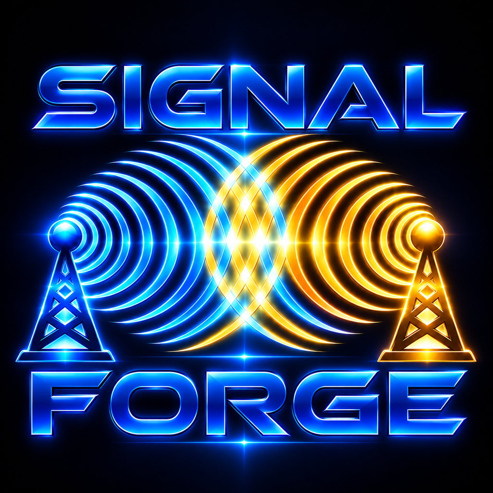

Provenance first
Research outputs should retain enough source context, timestamps, identifiers, and integrity information to be independently reviewed.
Signal Forge Research develops practical tools and reproducible methods for working with public data, provenance, research workflows, and privacy-conscious software.

assets/signal-forge-logo.png
and it will appear here automatically.
Signal Forge Research is an independent, non-commercial research and development project focused on transparent methodology, source provenance, reproducibility, and careful handling of data.
Research outputs should retain enough source context, timestamps, identifiers, and integrity information to be independently reviewed.
Workflows are designed so that research steps can be documented, repeated, tested, and improved over time.
Projects emphasize lawful access, data minimization, careful attribution, privacy, and clear separation between facts and inference.
The project is being built incrementally, with each component tested independently before being incorporated into larger workflows.
A Python-based framework for querying lawful public-data and OSINT sources, preserving provenance, and producing structured research outputs suitable for review and correlation.
A personal financial reconciliation and recordkeeping project designed to work with permissioned financial data, maintain local transaction history, reconcile pending and posted activity, and independently calculate balances while preserving audit integrity.
These principles guide how Signal Forge Research approaches software, public data, and research documentation.
Research, project, and technical correspondence: research@signalforgeresearch.com